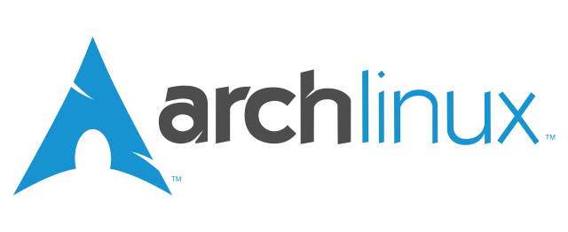
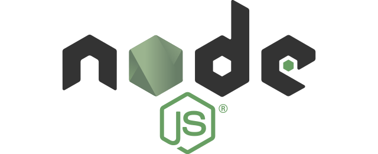

-

A simple, lightweight, and always up-to-date Linux distribution. Its ARM counterpart has been working on hacker boards ling time before Ubuntu snappy. Mature, stable, and most important simple, ArchLinux can bootstrap most hacker-friendly boards out there in few seconds.
-

Based on Chrome's V8 JavaScript engine, NodeJS is the powerful JavaScript runtime used by developers of any level as Web server backed as well as Sys administartor tools. Thanks to its npm modules such serialport or johnny-five, NodeJS can be used to drive Arduino, Raspberry Pi, and many other IoT oriented boards.
-

Formerly known as Atom Shell, Electron is an open source project maintained by GitHub and an active community of contributors. It uses Chromium and NodeJS, meaning you can build any kind of app using npm modules, HTML and CSS pages, and JavaScript on top.